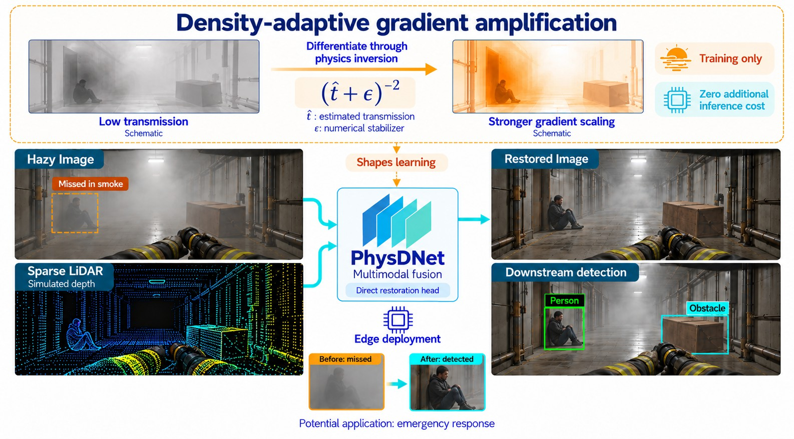
Modern dehazing networks are often computationally expensive and overfit to synthetic haze, limiting real-time deployment. This underscores an urgent demand for efficient, high-fidelity restoration methods that can operate on resource-constrained edge devices in practical, dynamic environments. We introduce PhysDNet, a lightweight multimodal architecture that fuses NIR imagery with sparse LiDAR depth and is trained with a physics-constrained dual-head objective. Differentiating through a fixed Koschmieder inversion induces density-adaptive gradient amplification, acting as an implicit resource allocation mechanism that concentrates learning on heavily degraded regions without increasing inference cost. PhysDNet delivers superior restoration with minimal capacity and enhanced training efficiency, facilitating real-time deployment on edge devices without increasing inference overhead. On the Seeing Through Fog benchmark, PhysDNet outperforms competitors by 1.67 dB at 5.2× lower compute and recovering 54.9% of fog-induced detection loss. Ablations and cross-domain evaluations show that physics-guided training improves generalization including under non-homogeneous haze that violates the Koschmieder assumption. PhysDNet further demonstrates compatibility with fixed-function NPUs, running at 29/45/99 FPS at <4 W across L/M/S variants.
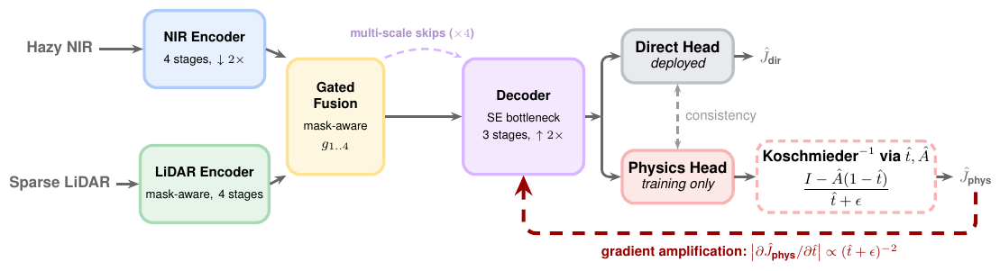
Click any block for its role, tensor shape (PhysDNet-M, base width c = 64; S/M/L use c ∈ {32, 64, 96}) and equation.
The physics head predicts transmission t̂ ∈ [0.05, 0.95] and a global airlight Â, then inverts the scattering model I = J·t + A(1 − t) in closed form: Ĵphys = (I − Â(1 − t̂)) / (t̂ + ε). This inversion has no learnable parameters. Its derivative, ∂Ĵphys/∂t̂ = (Â − I) / (t̂ + ε)2, scales the gradient reaching the shared encoder by up to ≈400× in dense fog relative to clear air. The result is an implicit hard-example mining along the transmission axis, with no extra hyperparameters and no inference cost.
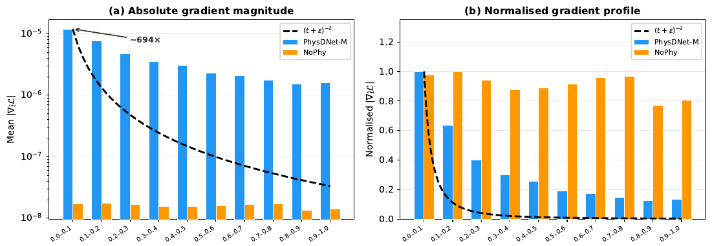
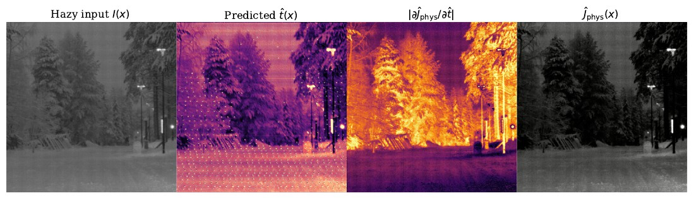
A fixed error δ in t̂ produces a restoration error δ(A − J)/(t + δ): harmless where t is high, amplified where fog is dense. This t-dependence is why the gradient through the inversion concentrates on dense haze. β covers the paper's 0.005–0.10 sweep. For illustration, J is PhysDNet's restored frame and d is a dense depth map interpolated from this frame's own sparse LiDAR returns (about 4–72 m). Near field: d < 15 m; far field: d > 40 m.
| Method | Input | Res. | Params (M) | GMACs | PSNR (dB) ↑ | SSIM ↑ |
|---|---|---|---|---|---|---|
| DCP | NIR | 256 | 0 | — | 17.62 | 0.5992 |
| AOD-Net | LiDAR+Gated | 256 | 0.002 | 0.06 | 20.95 | 0.7329 |
| DehazeFormer-T | NIR | 512 | 1.36 | 10.92 | 33.38 | 0.9348 |
| FFA-Net | NIR | 512 | 0.77 | 98.57 | 33.90 | 0.9474 |
| FFA-Net | NIR+LiDAR | 512 | 0.77 | 98.73 | 34.79 | 0.9516 |
| DEA-Net | NIR | 256 | 3.65 | 16.42 | 33.71 | 0.9588 |
| DEA-Net | LiDAR | 256 | 3.65 | 16.44 | 33.53 | 0.9572 |
| PhysDNet-S | NIR+LiDAR | 256 | 0.72 | 2.24 | 32.80 | 0.9331 |
| PhysDNet-M | NIR+LiDAR | 256 | 2.95 | 8.56 | 35.55±0.07 | 0.9566±0.0009 |
| PhysDNet-L | NIR+LiDAR | 256 | 6.59 | 18.98 | 36.46 | 0.9606 |
Best-resolution row per baseline shown; the paper's Table 1 lists every resolution and input combination.
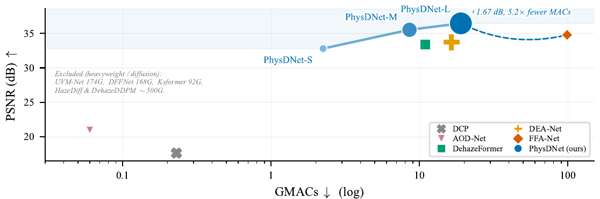
| Variant | Physics head | Params (M) | PSNR (dB) | SSIM | mAP (%) | ΔmAP |
|---|---|---|---|---|---|---|
| PhysDNet-M | ✓ | 2.95 | 35.55 | 0.9569 | 11.70 | +3.05 |
| PhysDNet-M NoPhy | × | 2.91 | 30.02 | 0.9263 | 10.70 | +2.06 |
| Difference | −0.04 | −5.51 | −0.0306 | −1.00 | −0.99 |
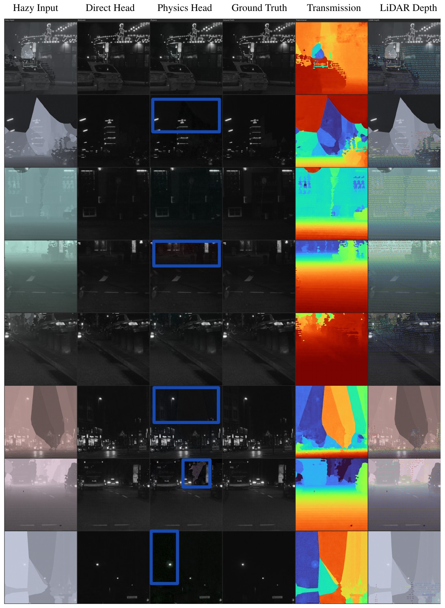
| Condition | APveh | APpers | APcyc | mAP (%) | ΔmAP | Recovery |
|---|---|---|---|---|---|---|
| Clean (upper bound) | 33.95 | 7.97 | 1.05 | 14.33 | — | — |
| Foggy (β = 0.06) | 18.09 | 5.42 | 2.42 | 8.64 | −5.68 | — |
| AOD-Net (NIR) | 15.14 | 4.66 | 1.27 | 7.02 | −1.62 | — |
| DehazeFormer-T (NIR) | 16.37 | 5.74 | 1.65 | 7.92 | −0.72 | — |
| FFA-Net (NIR) | 24.37 | 6.30 | 1.32 | 10.66 | +2.02 | 35.6% |
| DEA-Net (NIR) | 25.82 | 5.82 | 1.66 | 11.10 | +2.45 | 43.1% |
| PhysDNet-S | 24.49 | 5.94 | 1.22 | 10.55 | +1.91 | 33.6% |
| PhysDNet-M | 27.65 | 6.45 | 0.99 | 11.70 | +3.05 | 53.7% |
| PhysDNet-L | 27.60 | 6.70 | 0.99 | 11.76 | +3.12 | 54.9% |
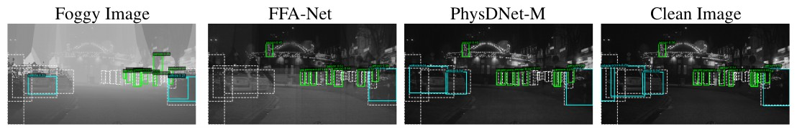
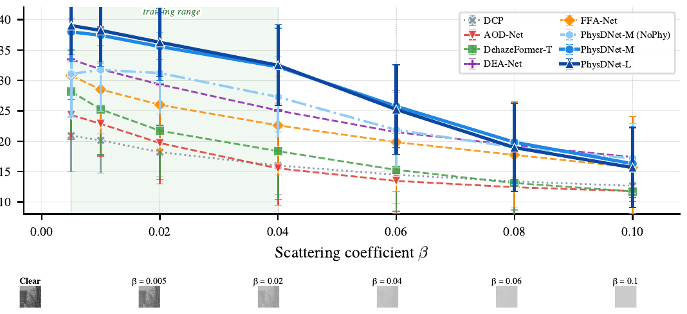
Trained on STF only and evaluated on O-HAZE and I-HAZE with no LiDAR at test time (NIR→RGB, synthetic→real, outdoor→indoor). PhysDNet-M improves PSNR-Y over DEA-Net by +0.53 dB on O-HAZE and +0.62 dB on I-HAZE; on non-homogeneous NH-HAZE, which violates the Koschmieder assumption, it still leads by +0.15 dB, and removing the physics head costs 0.54 dB.
| O-HAZE (outdoor) | I-HAZE (indoor) | |||||||
|---|---|---|---|---|---|---|---|---|
| Method | PSNR-Y | SSIM-Y | PSNR-RGB | SSIM-RGB | PSNR-Y | SSIM-Y | PSNR-RGB | SSIM-RGB |
| AOD-Net | 15.11 | 0.5000 | 14.88 | 0.4931 | 14.69 | 0.5824 | 14.51 | 0.5724 |
| FFA-Net | 19.20 | 0.7177 | 18.49 | 0.6968 | 15.82 | 0.6521 | 15.48 | 0.6402 |
| DehazeFormer-T | 19.48 | 0.6839 | 18.81 | 0.6641 | 15.86 | 0.6142 | 15.56 | 0.6050 |
| DEA-Net | 19.92 | 0.7042 | 19.20 | 0.6854 | 16.31 | 0.6455 | 16.02 | 0.6362 |
| PhysDNet-S | 19.89 | 0.7190 | 19.21 | 0.6989 | 16.81 | 0.6895 | 16.49 | 0.6734 |
| PhysDNet-M | 20.45 | 0.7461 | 19.65 | 0.7253 | 16.93 | 0.6947 | 16.59 | 0.6795 |
| PhysDNet-M (NoPhy) | 18.92 | 0.7358 | 18.38 | 0.7174 | 16.33 | 0.6907 | 16.06 | 0.6746 |
| PhysDNet-L | 20.31 | 0.7488 | 19.51 | 0.7279 | 16.57 | 0.6887 | 16.24 | 0.6756 |
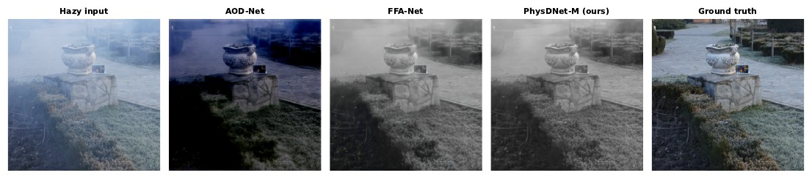
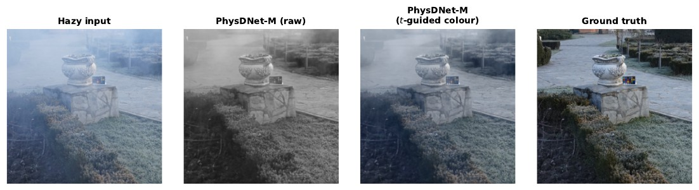
Real STF fog frames have no ground truth, so we measure agreement between the direct and physics heads. Agreement is higher in dense fog, where the gradient amplification concentrates learning.
| Metric | Dense fog | Light fog |
|---|---|---|
| MSE ↓ | 0.0002 | 0.0006 |
| PSNR (dB) ↑ | 37.48 | 33.83 |
| Pearson r ↑ | 0.9947 | 0.9912 |
Additional experiments run during the review period, all with the publicly released checkpoints.
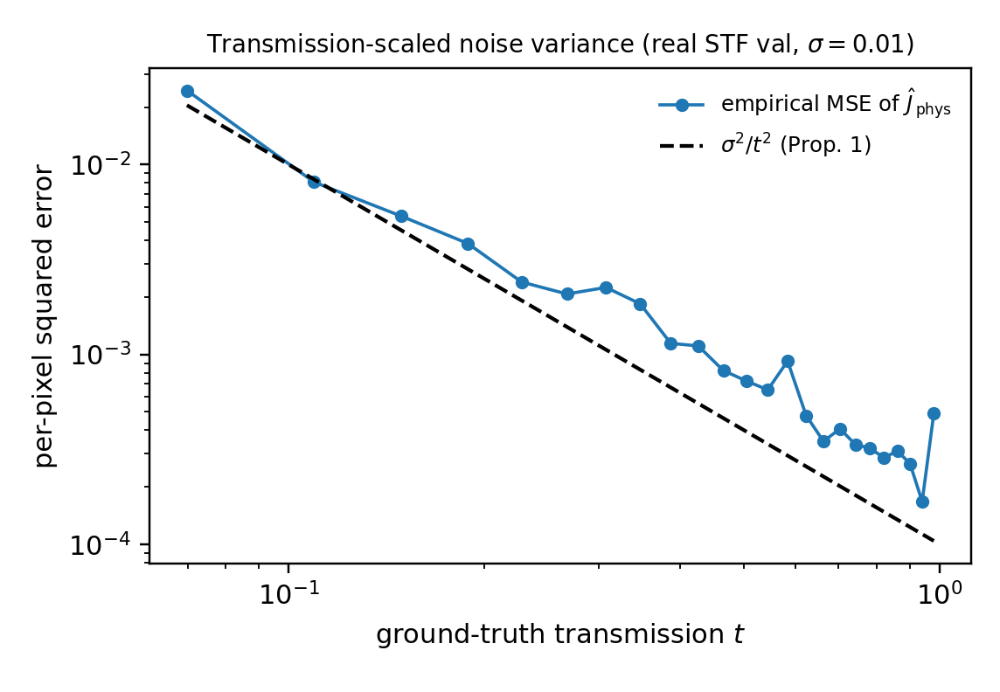
Proposition 1 predicts that the inversion's noise variance scales as Var[Ĵphys] = σ²/t² + O(δ), the same t−2 structure that drives the gradient amplification. The measured error follows this law across two orders of magnitude, with a log-log correlation of r = 0.981. The small uniform offset above the line matches the O(δ) estimation term.
This also explains the noise visible in the physics head at low transmission (Fig. 11). It is the predicted variance structure, and the deployed direct head does not inherit it.
We ran matched no-physics (NoPhy) controls on two further inverse problems and on RGB-only data. The mechanism helps when the inverted physical parameter is anchored by a privileged measurement such as depth. Without an anchor it is neutral, and it never hurts.
| Task | Inverted model | Anchored? | Physics vs. NoPhy |
|---|---|---|---|
| Dehazing, STF (NIR + sparse LiDAR) | t = e−βd | yes, LiDAR | +5.51 dB PSNR, +0.99 pp mAP |
| Underwater restoration (NYU-v2 RGBD synth.) | per-channel tc = e−βcd | yes, sparse depth | +0.38 dB overall, +0.82 dB mid-t bin, +0.60 dB red channel |
| Low-light, LOL-v2-Real (100 images) | Retinex R = I / (L + ε) | yes | +0.5 to 0.6 dB, SSIM 0.906 vs 0.897 |
| Dehazing, RESIDE-6K (RGB only) | t = e−βd | no | tie, 28.4 vs 28.6 dB |
| Low-light, LOL-v1 (15 images) | Retinex | no | inconclusive, noise-dominated test set |
Low-light enhancement is the A → 0 special case of Eq. 5.
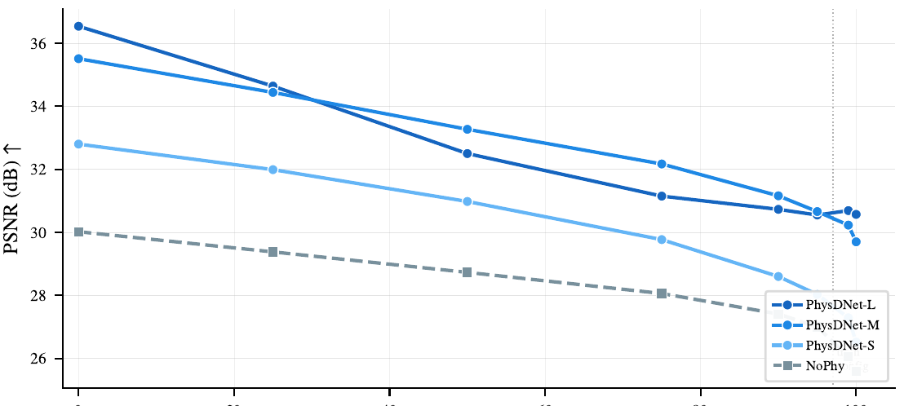
RGB-only training. PhysDNet-M trained from scratch on RESIDE-6K with zero depth input reaches 28.4 dB / 0.965 SSIM on the full 1,000-image SOTS-mix test set with the same recipe, and was still converging at the 300-epoch budget. It keeps the NPU-compatible operator set.
Depth branch folds away. With zero depth input the LiDAR branch's activations become constants that fold into the network. The outputs are bit-exact and compute drops from 8.56 to 6.33 GMACs (−26%) for RGB-only deployment.
The training regime drives transfer. Zero-shot on O-HAZE, the STF-trained model beats its colour-native RESIDE-trained sibling by about 3 dB PSNR-RGB (19.65 vs 16.58).
Dual-head consistency on real STF captures (real camera, real weather-attenuated LiDAR, n = 250 per split, full resolution) across every official split, including rain and snow, which were not in the paper.
| Condition | Day | Night |
|---|---|---|
| Clear | 39.2 / 0.998 | 33.4 / 0.993 |
| Light fog | 40.1 / 0.999 | 34.7 / 0.994 |
| Dense fog | 40.3 / 0.999 | 34.8 / 0.995 |
| Snow | 39.5 / 0.997 | 35.4 / 0.994 |
| Rain | 35.1 / 0.995 | — |
Agreement is highest in dense fog, as the density-adaptive mechanism predicts. Night scenes lose a uniform ~5 dB with r ≥ 0.993, because active light sources locally violate the global-airlight assumption; the direct head absorbs this.
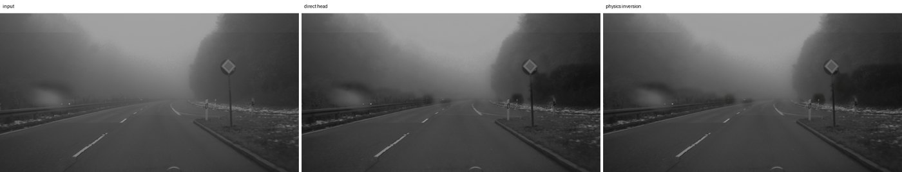
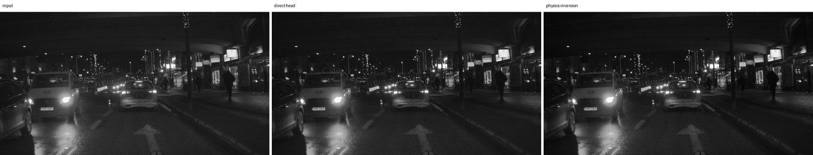
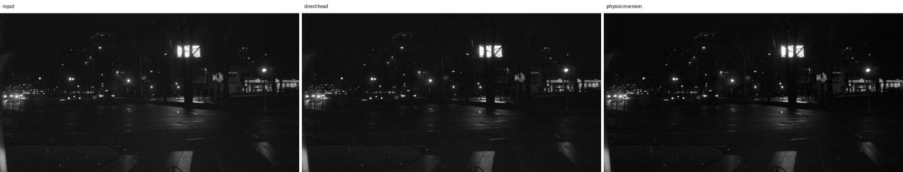
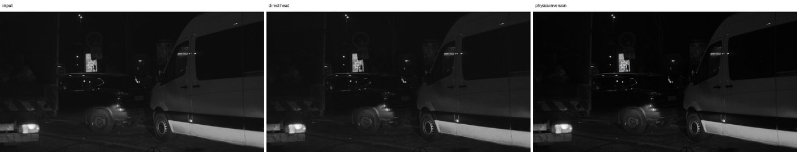
Each strip: real input, direct head, physics inversion.
Trained on monochrome NIR, PhysDNet's raw output on RGB haze is nearly grey. We replace the paper's heuristic colour transfer with label-free self-supervised adaptation on unpaired real haze. The parameter-free physics inversion acts as a colour teacher: it is closed-form algebra on the coloured input, so its output is inherently coloured. The recipe adds Koschmieder re-composition, dual-head consistency, a dark-channel prior and synthetic replay, needs no architecture change, and takes 5 epochs (about 13 minutes on one 16 GB GPU).
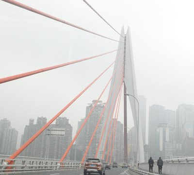
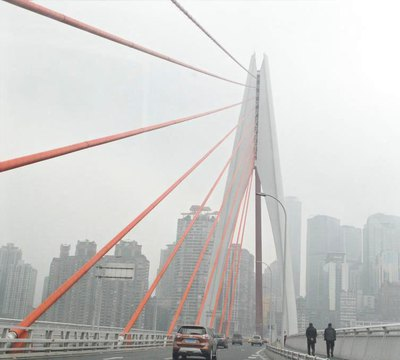
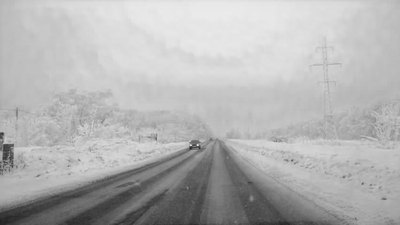
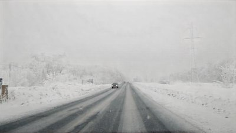
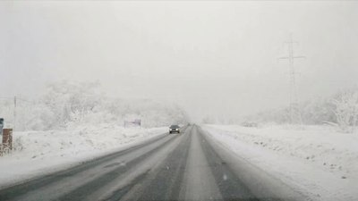
| Condition | Colorfulness | NIQE ↓ | BRISQUE ↓ | mAP@0.5 |
|---|---|---|---|---|
| Hazy (unprocessed) | 15.70 | 5.35 | 38.3 | 48.14 |
| PhysDNet-M, zero-shot STF | 0.03 | 4.90 | 34.7 | 46.28 |
| + URHI adaptation (unpaired, no labels) | 12.83 | 4.74 | 33.4 | 44.82 |
| + RTTS-train adaptation, physics head | 16.49 | 5.11 | 36.5 | 48.21 |
| PhysDNet-M, RESIDE-6K-trained | 19.45 | 4.81 | 33.6 | 47.71 |
URHI adaptation restores colour (0.03 → 12.8) and gives the best no-reference quality of all conditions. Adapted on RTTS's own unlabeled train split, the physics head matches or exceeds the raw hazy input on every measured axis. We report the trade-offs too. RTTS haze is mostly light and COCO-pretrained YOLO is already haze-robust, so direct-head outputs lower mAP there. The URHI-adapted model also gives up 5.1 dB on O-HAZE's dense machine haze, so Table 4 keeps the base model. Colour fidelity inherits the airlight estimate, so a mild warm shift can appear under strongly tinted light.
PhysDNet uses only NPU-friendly operators (depthwise-separable convolutions, BatchNorm, ReLU6, bilinear upsampling). Under standard ONNX export and vendor INT8 post-training quantization, only PhysDNet and AOD-Net compile for the fixed-function NPU, and AOD-Net's restoration quality (20.95 dB) is insufficient for deployment.
| Fixed-function NPU | Jetson Orin Nano | |||||
|---|---|---|---|---|---|---|
| Model | Params (M) | GMACs | Compile | FPS | FPS | Power (W) |
| AOD-Net LiDAR | 0.002 | 0.06 | ✓ | 1220 | 327.0 | 4.94 |
| FFA-Net LiDAR | 0.77 | 24.68 | ✗ | — | 46.9 | 8.21 |
| DehazeFormer-T LiDAR | 1.36 | 2.73 | ✗ | — | 47.1 | 12.38 |
| DEA-Net LiDAR | 3.65 | 16.44 | ✗ | — | 28.5 | 10.17 |
| PhysDNet-S | 0.72 | 2.24 | ✓ | 99 | 108.3 | 13.45 |
| PhysDNet-M | 2.95 | 8.56 | ✓ | 45 | 58.5 | 12.38 |
| PhysDNet-L | 6.59 | 18.98 | ✓ | 29 | 38.8 | 11.80 |
The paper excludes 2024–2026 heavyweight and diffusion dehazers as outside the edge budget. We measured them under the same protocol: fvcore at 256², Jetson Orin Nano in MAXN (25 W) mode, TensorRT FP16, 50 warm-up + 300 timed iterations, engine build excluded.
| Method | Params | GMACs / call | NFE | Effective GMACs | Jetson, TRT FP16 |
|---|---|---|---|---|---|
| UVM-Net (official) | 1004 M | 250.9 | 1 | 250.9 | fails (out of memory) |
| DFFNet‡ | 17.8 M | 61.3 | 1 | 61.3 | no ONNX (2-D FFT); 157 ms eager |
| Ksformer‡ | 5.5 M | 109.0 | 1 | 109.0 | 360 ms (2.8 FPS) |
| DehazeDDPM (official) | 97.8 M | 90.2 | 50 | 4509 | 3.1 s / image (0.32 FPS) |
| RSHazeDiff (official) | 109.7 M | 8.0 | 1690 | 13523 | 17.0 s / image (0.06 FPS) |
| PhysDNet-L | 6.59 M | 18.98 | 1 | 18.98 | 25.8 ms (38.8 FPS) |
‡Faithful re-implementations calibrated to the published parameter budgets; no official code exists. Even PhysDNet-L needs 3.2× less compute than the lightest excluded method, and those methods' INT8 behaviour, required at NPU power budgets, is uncharacterised.
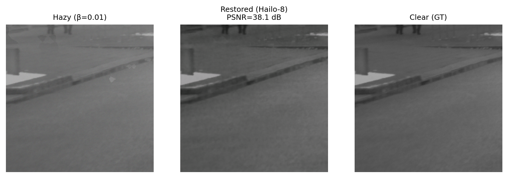
@inproceedings{dhahri2026physdnet,
title = {PhysDNet: Physics-Driven Gradient Amplification for
Real-Time Image Dehazing},
author = {Dhahri, Rayen and Sun, Lei and Kartsch Morinigo, Victor Javier
and Pagnoux, Alice and Benini, Luca and Paudel, Danda Pani
and Van Gool, Luc},
booktitle = {Advances in Neural Information Processing Systems (NeurIPS)},
year = {2026}
}